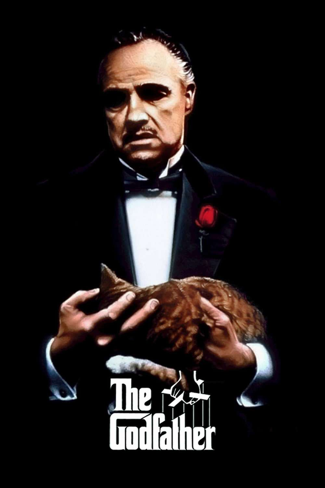

The Genius of Cinematic Visionaries
Kubrick, Welles, Coppola, Scorsese, and Carpenter
The history of cinema is defined by the works of visionary directors whose films transcend entertainment, becoming touchstones of artistic achievement. Stanley Kubrick, Orson Welles, Francis Ford Coppola, Martin Scorsese, and John Carpenter have each made indelible marks on the medium, shaping its evolution and inspiring generations of filmmakers. Their iconic works—2001: A Space Odyssey (1968), Citizen Kane (1941), The Godfather (1972), Taxi Driver (1976), and The Thing (1982)—demonstrate not only their individual genius but also the transformative potential of cinema as an art form.

Stanley Kubrick: A Vision Beyond the Stars
Kubrick’s 2001: A Space Odyssey is often cited as one of the greatest achievements in film history. With its groundbreaking visual effects, philosophical depth, and enigmatic narrative, the film redefined science fiction and elevated it to high art. Kubrick's meticulous attention to detail and fearless exploration of existential themes showcase his unparalleled vision. The director’s insistence on scientific accuracy and his collaboration with futurists gave the film a timeless quality, making it a profound meditation on humanity's place in the universe. Kubrick's ability to blend technological innovation with storytelling cemented his reputation as a master filmmaker.

Orson Welles: The Architect of Modern Cinema
Orson Welles revolutionized cinema with Citizen Kane, a film that continues to be lauded for its groundbreaking narrative structure and technical innovations. At just 25 years old, Welles redefined the language of cinema with his use of deep focus, non-linear storytelling, and innovative lighting techniques. The film’s exploration of power, memory, and identity is as relevant today as it was in 1941. Welles’s audacity in challenging Hollywood norms and his deep understanding of the medium make him one of the most influential directors in cinematic history. Citizen Kane remains a benchmark for narrative complexity and visual storytelling.
Francis Ford Coppola: The Architect of the American Epic
In The Godfather, Francis Ford Coppola crafted a sprawling yet intimate narrative about power, family, and morality. Coppola’s direction is marked by its operatic grandeur, rich character development, and nuanced performances, particularly from Marlon Brando and Al Pacino. The film's cinematography, with its chiaroscuro lighting and deliberate pacing, reflects Coppola’s mastery of mood and tone. By combining Shakespearean drama with the grit of 20th-century America, Coppola redefined the gangster genre and set a new standard for cinematic storytelling. His ability to balance personal struggles and grand themes solidified his status as one of cinema's greatest auteurs.

Martin Scorsese: A Chronicler of the Human Psyche
Martin Scorsese's Taxi Driver is an unflinching portrait of alienation and moral decay in 1970s New York City. Through the eyes of Travis Bickle, played with intensity by Robert De Niro, Scorsese explores themes of loneliness, violence, and redemption. The film's use of gritty urban visuals, Bernard Herrmann's haunting score, and a morally ambiguous protagonist reflects Scorsese's fascination with the darker aspects of human nature. Taxi Driver is a masterclass in psychological storytelling, and Scorsese’s ability to merge character study with social commentary underscores his place among the greatest directors in cinematic history.
John Carpenter: The Maestro of Atmospheric Horror
With The Thing, John Carpenter delivered a masterpiece of suspense and paranoia, cementing his legacy as a pioneer of the horror genre. The film’s practical effects, designed by Rob Bottin, remain some of the most innovative and terrifying in cinematic history. Carpenter’s deft use of claustrophobic settings, minimalist score, and escalating tension creates an atmosphere of dread that lingers long after the credits roll. The Thing explores themes of mistrust and survival, making it as much a psychological thriller as a horror film. Carpenter's work, often underappreciated in his time, has gained recognition as a model of genre filmmaking.

Unordered List: Key Features of the Movies
- 2001: A Space Odyssey: Groundbreaking visual effects, existential themes, minimalist dialogue.
- Citizen Kane: Non-linear storytelling, innovative cinematography, exploration of power and legacy.
- The Godfather: Deep character arcs, iconic performances, themes of family and morality.
- Taxi Driver: Psychological depth, urban decay setting, morally ambiguous protagonist.
- The Thing: Practical effects, claustrophobic tension, themes of paranoia and survival.
The Legacy of Greatness
Kubrick, Welles, Coppola, Scorsese, and Carpenter share a commitment to pushing the boundaries of cinematic storytelling. While their styles and genres differ, each director demonstrated an unwavering dedication to their craft, revolutionizing the medium in their own ways. Whether through Kubrick’s intellectual rigor, Welles’s innovative techniques, Coppola’s epic narratives, Scorsese’s psychological depth, or Carpenter’s atmospheric mastery, these filmmakers have left an enduring legacy.
These films are more than just masterpieces of their respective genres; they are cultural landmarks that continue to influence and inspire. The genius of these directors lies in their ability to reflect the human condition while reshaping the art of cinema itself. Through their work, they have not only entertained but also challenged and enriched audiences worldwide, earning their place as some of the greatest figures in the history of film